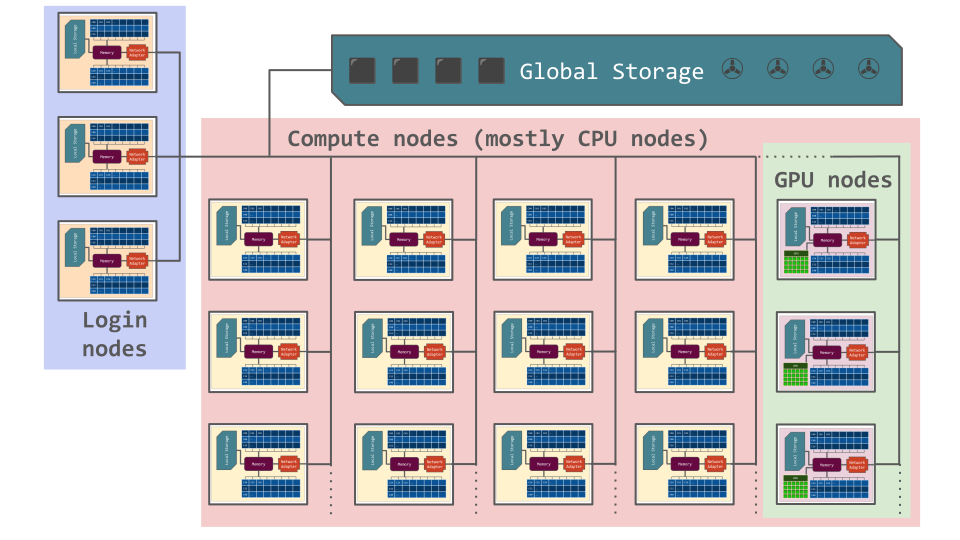
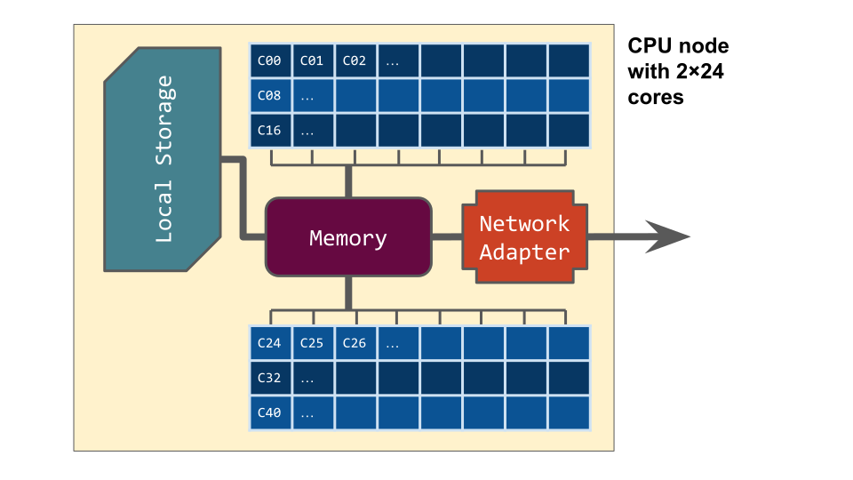
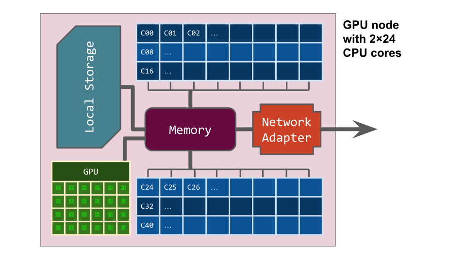
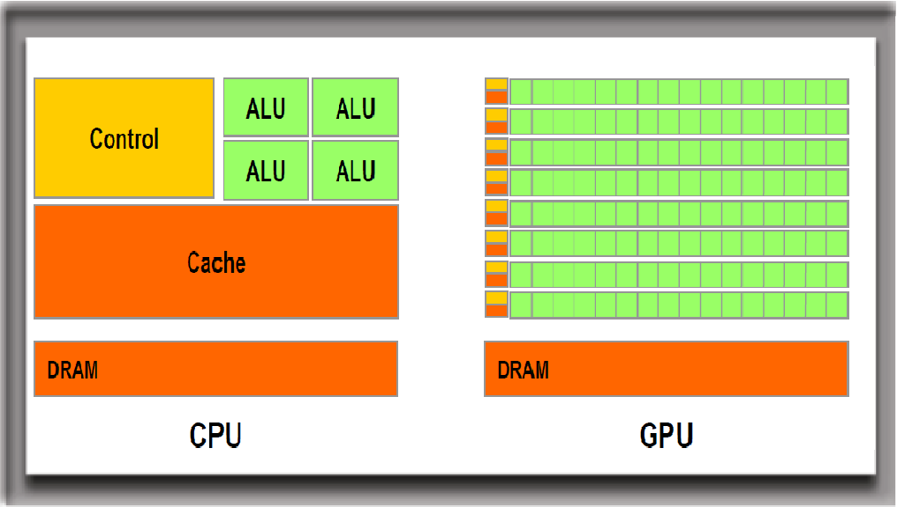
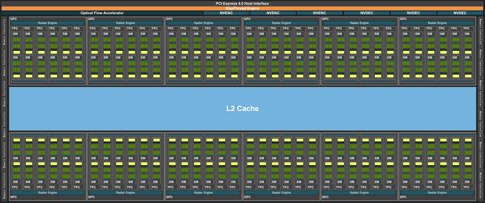
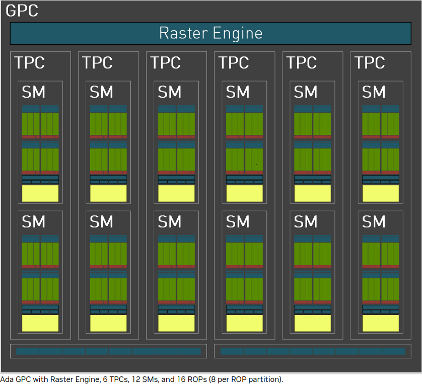

Introduction to compute clusters¶
(Most material taken from the NAISS course “Running jobs on clusters”)
This section is a beginner’s guide to clusters, and provides general information about computer clusters like Kebnekaise, Arrhenius, Tetralith, Dardel, Alvis, Cosmos, Pelle, Lumi, and other HPC systems, but is not directly focused on any of them.
The exercises will be done on Kebnekaise, though.
Schedule¶
| Time | Topic | Activity | Teacher |
|---|---|---|---|
| 13:00 | Intro to clusters | lecture | BB |
| 14:15 | Break | Break | Break |
| 14:30 | Kebnekaise | lecture + visit to machine room | BB |
| 16:00 | End of day | . | . |
What is a cluster¶
A computer cluster consists of a number of computers (few or many), linked together and working closely together. In many ways, the computer cluster works as a single computer. Generally, the component-computers are connected to each other through fast local area networks (LANs).
The advantage of computer clusters over single computers, are that they usually improves the performance (and availability) greatly, while still being cheaper than single computers of comparable speed and size.

What are Nodes, Cores, and CPUs?¶
A node is the name usually used for one unit (usually one computer) in a computer cluster. Generally, this computer will have one or two central processing units, or CPUs, each normally with (many) more than one core. Each core is a single processor able to handle a single programmed task. Memory is always shared between cores on the same CPU, but generally not (as closely) between the CPUs. Computer nodes can also have GPUs (graphical processing units) in addition to the CPUs.


Nodes in computer clusters are usually arranged in racks at a dedicated climate- controlled facility, and are connected via a communication network. With few exceptions, nearly all high-performance computer clusters use the Linux operating system. Normally, clusters have some sort of batch or queuing system to handle scheduling of jobs. On Linux systems, that batch or queuing system is most often Slurm (the Simple Linux Utility for Resource Management). We will talk much more about Slurm when we come to the session about “the Batch system”.
What is a Supercomputer? Is it the same as a Cluster?¶
A supercomputer is simply a computer with a processing capacity (generally calculation speed) several orders of magnitude better than a typical personal computer. For many years, supercomputers were single computers with many CPUs and usually large volumes of shared memory—sometimes built specifically for a certain task. They have often been custom-built machines, like Cray, and still sometimes are. However, since desktop computers have become cheaper, most supercomputers today are made up of many “off the shelf” ordinary computers connected in parallel.
A supercomputer is not the same as a computer cluster, though a computer cluster is often a supercomputer.
How is a job run on a computer cluster? What is a batch system?¶
In general, jobs are run with a batch- or queuing system. There are several variants of these, with the most common working by having the user log into a “login node” and then assembling and submitting their jobs from there.
A “job script” (also called a “submission script”) will typically be used to start a job. A job script is essentially a list of commands to the batch system telling it things like: - how many nodes to use, - how many CPU and/or GPU cores, - how much memory to allocate, - how long to run (maximum), - the program name, - any input data, etc.
When the job has finished running, it should have produced some files, like output data, perhaps error messages, etc. The syntax of job scripts depends on the queuing system, but that system is so often Slurm that you may see the terms “job script” and “slurm script” used interchangeably.
Since jobs are queued internally and will run whenever the resources for them become available, programs requiring any kind of user interaction are usually not recommended (and often not possible) to be run via a job script. There are special programs like Open On-Demand and GfxLauncher that allow graphical programs to be run as scheduled jobs on some HPC clusters, but it is up to the administrators to decide which programs can be run with these tools, how they should be configured, and what options regular users will be allowed to set.
Exercises¶
- Login to Kebnekaise with SSH.
- Type
sinfoto see partitions. On Kebnekaise, users can only submit to the partition batch - the other partitions are used by the batch system depending on which resources the user asks for in the batch script. The commandsinfoshows you which nodes belong to which “batch partition” and their state (idle, draining, maintenance, allocated, reserved, mixed, etc.) - Type
/bin/hostnameto see the full name of the login node. - The command
lscpugives you (a lot of) info on the hardware of the login node. The commandfree -hshow you used/free memory of the login node. Not hugely important as you will be running the jobs on the compute nodes, NOT the login node. - Inside the directory
exercises/05.compute-cluster/from the tarball, you find a batch script for running a Python script that does matrix-matrix multiplication. We will describe what the commands of a batch script does further under the session “The batch system/Slurm”, but for now you will just use it to test out a few things on the compute cluster Kebnekaise.- Type
sbatch run_mmmult.shto submit the job. - Type
squeue --meto see that your job is sitting in a queue or running. - Which node did it get? Write
scontrol show node <THE NODE NAME>to get info on the node. - When you submit the job you get a job ID. You can do
scontrol show job <JOB ID>for more information about the job. - It may take time for the job to start running and also to finish running. Test running the short script
simple.shby submitting it withsbatch simple.sh. See that you get a file called “slurm-.out”.
- Type
Which programs can be run effectively on a computer cluster?¶
Computer clusters are made up of many interconnected nodes, each with a limited number of cores and limited memory capacity. The main way an HPC cluster lets you speed up computations is by letting you execute several tasks in parallel. In other words, a problem must somehow be split into many tasks to gain any speed-up.
Many serial jobs¶
Running many independent tasks can be done faster on a computer cluster. No special programming is needed, but you can only run on one core for each task. It is good for long-running single-threaded jobs. This type of workflow is good for problems like parameter sweeps, where the same code is run repeatedly with different inputs.
A job scheduler is used to control the flow of tasks. Using a small script, many instances of the same task (like a program run many times, each with slightly different parameters) can be set up. The tasks will be put in a job queue, and will run as free spaces open up in the queue. Normally, the tasks will run many at a time, since they are serial, which means each only uses one core.
Example
You launch 500 tasks (say, run a small program for 500 different temperatures).
There are 50 cores on the machine in our example, that you can access. Fifty instances are started and then run, while the remaining 450 tasks wait. When the running programs finish, the next 50 will start, and so on.
It will be as if you ran on 50 computers instead of one, and you will finish in 1/50th of the time.
Of course, this is an ideal example. In reality there may be overhead, waiting time between batches of jobs, etc. so the speed-up will not be as great, but it will certainly run faster.
Parallelization¶
Parallelization can be done in several ways:
- Inside a node: threaded/shared memory
- Across several nodes: distributed parallelism (generally done with MPI or similar.)
- Some combination of threaded and distributed parallelism (hard)
Which is best depends on the size of each parallel process and whether or to what extent the processes have to communicate.
What kinds of programs can be parallelized?¶
For a problem to be parallelizable, it must be possible to split it into smaller sections that can be solved independently of each other and then combined.
What happens in a parallel program is generally the following:
- A “master” process is created to control the distribution of data and tasks.
- The “master” sends data and instructions to one or more “worker” processes that do the calculations.
- The “worker” processes then send the results back to the “master”.
- The “master” combines the results and/or may send out further subsections of the problem to be solved.
Examples of parallel problems:
- Sorting
- Rendering computer graphics
- Computer simulations comparing many independent scenarios, like climate models
- Matrix Multiplication
Shared memory/thread parallelism¶
Shared memory is memory that can be accessed by several programs at the same time, enabling them to communicate quickly and avoid redundant copies. Shared memory generally refers to a block of RAM accessible by several cores in a multi-core system. Computers with large amounts of shared memory and many cores per node are well suited for threaded programs, using OpenMP or similar.
Computer clusters built up of many off-the-shelf computers usually have smaller amounts of shared memory and fewer cores per node than custom-built single supercomputers. This means they are more suited for programs using MPI than OpenMP. However, the number of cores per node is going up and many-core chips are now common. This means that OpenMP programs as well as programs combining MPI and OpenMP are often advantageous.
Distributed parallelism¶
While shared memory parallelism works well inside a node, you need distributed parallelism if you want to scale to more cores than are in a node.
This is often done with MPI (Message Passing Interface) libraries. Processes/workers exchange information by sending and receiving messages/data. They can also share some memory.
You need to write your code so it uses MPI or use software that is already prepared for it.
Hybrid parallelism¶
Sometimes code can be more efficient when using both OpenMP and MPI. This is called hybrid parallelism.
GPUs¶
Many computer clusters have GPUs in several of their nodes that jobs may take advantage of.
Originally, GPUs were used for computer graphics, but now they are also used extensively for general-purpose computing (GPGPU computing).

GPU-driven parallel computing is, among other things, used for:
- scientific modeling
- machine learning
- graphical rendering
and other parallelizable jobs.
Difference between CPUs and GPUs¶
In order to understand the capabilities of a GPU, it is instructive to compare a pure CPU architecture with a GPU based architecture.
A schematics of a CPU node

A schematics of a GPU node
A GPU card of type Ada Lovelace (like the L40s) looks like this:

The AD102 GPU also includes 288 FP64 Cores (2 per SM) which are not depicted in the above diagram.
The FP64 TFLOP rate is 1/64th the TFLOP rate of FP32 operations.
The small number of FP64 Cores are included to ensure any programs with FP64 code operate correctly, including FP64 Tensor Core code.
This following picture is of a single GPU engine of a L40s card. There are 12 Graphics Processing Clusters (GPCs), 72 Texture Processing Clusters (TPCs), 144 Streaming Multiprocessors (SMs), and a 384-bit memory interface with 12 32-bit memory controllers).
On the diagram, each green dot represents a CUDA core (single precision), while the yellow are RT cores and the blue Tensor cores. The cores are arranged in the slots called SMs in the figure. Cores in the same SM share some local and fast cache memory.

In a typical cluster, some GPUs are attached to a single node resulting in a CPU-GPU hybrid architecture. The CPU component is called the host and the GPU part the device.
Example
One possible layout (Kebnekaise, AMD Zen4 node with L40s GPU) is as follows:

We can characterize the CPU and GPU performance with two quantities: the latency and the throughput.
- Latency refers to the time spent in a sole computation.
- Throughput denotes the number of computations that can be performed in parallel. Then, we can say that a CPU has low latency (able to do fast computations) but low throughput (only a few computations simultaneously).
CPUs (Central Processing Units) are latency-optimized general-purpose processors designed to handle a wide range of distinct tasks sequentially. (Low latency and low throughput).
GPUs (Graphics Processing Units) are throughput-optimized specialized processors designed for high-end parallel computing. (Latency is high and throughput is also high)
Whether you should use a CPU, a GPU, or both depends on the specifics of the problem you are solving.
Using GPUs¶

Programs must be written especially for GPUs in order to use them.
Several programming frameworks handle the graphical primitives that GPUs understand, like CUDA (Compute Unified Device Architecture), OpenCL, OpenACC, HIP, etc.
In addition to the above programming frameworks, you often have the option to use software that is already prepared for use on GPUs. This includes many types of MD software, Python packages, and others.
Kebnekaise¶
Kebnekaise have CPU-only, GPU enabled, and large memory nodes.
The CPU-only nodes are
- 2 x 14 core Intel skylake
- 6785 MB memory / core
- 48 nodes
- 2 x 64 core AMD zen3
- 8020 MB / core
- 1 node
- 2 x 128 core AMD zen4
- 2516 MB / core
- 8 nodes
The GPU enabled nodes are
- 2 x 14 core Intel skylake
- 6785 MB memory / core
- 2 x Nvidia V100
- 10 nodes
- 2 x 24 core AMD zen3
- 10600 MB / core
- 2 x Nvidia A100
- 2 nodes
- 2 x 24 core AMD zen3
- 10600 MB / core
- 2 x AMD MI100
- 1 node
- 2 x 24 core AMD zen4
- 6630 MB / core
- 2 x Nvidia A6000
- 1 node
- 2 x 24 core AMD zen4
- 6630 MB / core
- 2 x Nvidia L40s
- 10 nodes
- 2 x 48 core AMD zen4
- 6630 MB / core
- 4 x Nvidia H100 SXM5
- 2 nodes
- 2 x 32 core AMD zen4
- 11968 MB / core
- 6 x Nvidia L40s
- 2 nodes
- Can only use 10 cores/GPU
- 2 x 32 core AMD zen4
- 11968 MB / core
- 8 x Nvidia A40
- 1 nodes
The large memory nodes are
- 4 x 18 core Intel broadwell
- 41666 MB memory / core
- 8 nodes
Storage resources
- Kryten
- Tape storage
- WLCG, Swedish HPC centers
- 2500 tape slots
- IBM TS4500 3592 “Jaguar” tape library
- Center wide storage (Ransarn)
- Fast parallel file system
- Project storage
- 3 PB fast disk
- Uses Lustre
- WLCG storage
- dCache
- WLCG
- Target 50% of the Swedish Tier1 allocation
- HPC2N is a Tier-1 node, providing storage and computing services for the Worldwide LHC Computing Grid (WLCG).
Other than this, HPC2N is running a cloud system for the Swedish Science Cloud.
HPC2N is also part of several projects and collaborations, like eSSENCE, PRACE, Algoryx, WLCG, EOSC, EISCAT, SciLifeLab, and Skills4EOSC.
HPC2N is, together with SciLifeLab, a national Data Science Node in “Epidemiology and Biology of Infections” under the DDLS program. SciLifeLab and Wallenberg National Program for Data-Driven Life Science (DDLS) focuses on data-driven research, within fields essential for improving people’s lives, detecting and treating diseases, protecting biodiversity and creating sustainability.
Visit to the machine room¶
We will now go to the HPC2N machine rooms and see Kebnekaise as well as the infrastructure room. The visit will take 15-20 minutes.